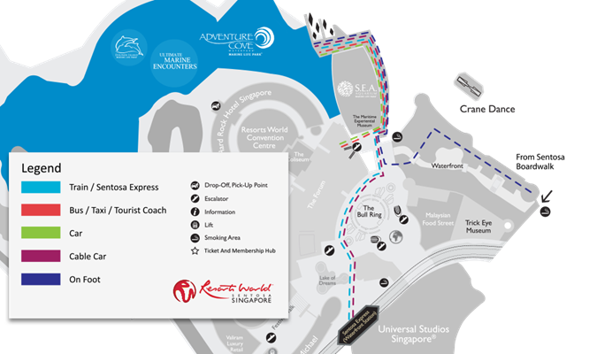

Resorts World Sentosa is a mere 10 minutes from Singapore’s Central Business District, and is easily accessible via reliable, convenient and extremely affordable modes of transportation i.e. buses, MRT rail system, taxis and cars. One can also take a leisurely stroll from VivoCity shopping mall to the resort. Find out detailed information on how to get here below.
Address:
Resorts World Sentosa
8 Sentosa Gateway
Sentosa Island
Singapore 098269
1.On Sentosa Gateway, keep to left lane and drive down the slope leading to Resorts World Sentosa Car Park.
2.Filter right and drive into tunnel for "Cars/Taxis".
3.Follow overhead signage to "B1 East" and park vehicle.
4.Locate nearest Car Park Map Directory and follow directions to Adventure Cove Waterpark on level 1.
1. Take buses 65, 80, 93, 188, 855, 10, 30, 97, 100, 131, 143, 145 or 166 and alight at VivoCity. Board bus RWS8 from bus stop 14141 at VivoCity or bus stop 14121 at Merrill Lynch, HarbourFront. Alight at Resorts World Sentosa drop-off point. OR Take bus 123, 188R, 963R, NR1 or NR6 and alight at Resorts World Sentosa bus stop 14519.
2. Enter via The Forum, turn right and walk to the end where McDonald's is located.
3. Take the escalator up to level 1 and you will see The Maritime Experiential Museum straight ahead across a small bridge.
4. Follow the signages along the waterfront and you will arrive at Adventure Cove Waterpark.
5. Dolphin Island and Ultimate Marine Encounters are located inside Adventure Cove Waterpark.